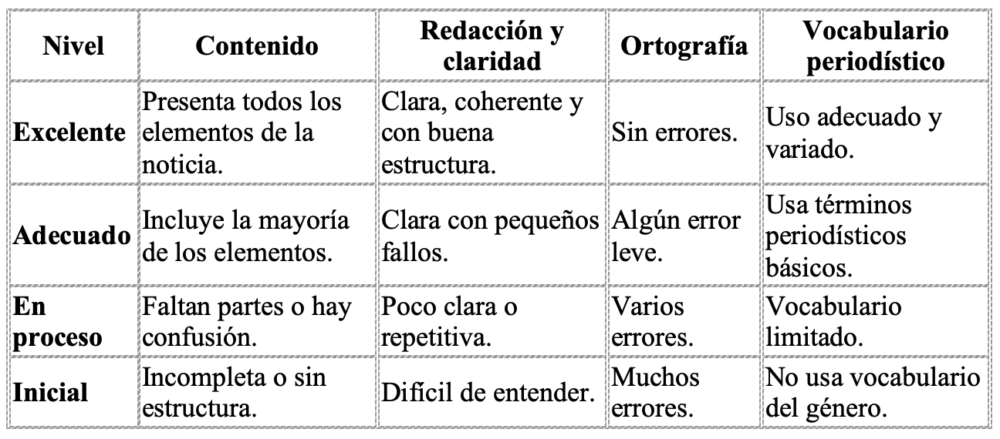

Información inicial
“No basta con tener una buena historia: hay que saber contarla.”
Duración aproximada: 2 semanas (12 sesiones)
Ámbitos: Lengua Castellana y Literatura · Geografía e Historia
Competencias: CCL · CD · CPSAA · CE
🎯 Objetivo de esta fase:
Aprender a estructurar correctamente una noticia, redactar con claridad y precisión, cuidar la ortografía y el vocabulario, y utilizar recursos del lenguaje periodístico para captar la atención del lector.
¿Qué vamos a hacer?
💬 En esta segunda parte del proyecto vas a convertirte en redactor o redactora del periódico.
Ya sabes cómo se organiza un periódico; ahora aprenderás a escribir noticias reales siguiendo el estilo periodístico.
Practicaremos cómo se construyen los titulares, cómo se resume la información en la entradilla y cómo se desarrolla el cuerpo de la noticia con claridad.
Actividad 1: Test. Las partes de una noticia.
Elija la respuesta correcta
Actividad 2. Redacta tu primera noticia.
Título: “Redacta tu primera noticia”
Instrucciones:
Elige un tema de actualidad del centro o del barrio.
Reúne la información básica: qué, quién, cuándo, dónde y por qué.
Escribe una noticia completa (8 – 10 líneas).
Revisa ortografía, puntuación y claridad.
Sube tu texto a Teams / Aula Virtual.
💬 Consejo: empieza con un titular atractivo y usa conectores: además, por otro lado, sin embargo…
📄 Ejemplo modelo:
“Los alumnos de 3.º ESO convierten el patio en un huerto escolar.”
El alumnado del ámbito lingüístico y social del IES Roces ha iniciado un proyecto de huerto sostenible.
Durante esta semana, los grupos de diversificación han preparado los semilleros y las primeras plantas.
El objetivo es fomentar hábitos de vida saludable y cuidar el medio ambiente.

Actividad 3.
💬 Actividad 3 (opcional, refuerzo o ampliación)
“Taller de titulares”
Se ofrecen tres noticias en formato papel y debéis inventar tres titulares distintos (informativo, llamativo y creativo).
Evaluación de la fase 2.
📋 ¿Cómo se evaluará esta parte?
Comprensión de la estructura de la noticia (Actividad 1).
Redacción y presentación de una noticia completa (Actividad 2).
Corrección ortográfica y uso del vocabulario periodístico.
Autoevaluación final.
Contenido DUA
♿ Medidas DUA
Textos en lectura fácil y ejemplos visuales.
Noticias modelo con audio de lectura.
Entrega flexible (texto escrito o audio narrado).
Plantilla descargable para guiar la estructura.